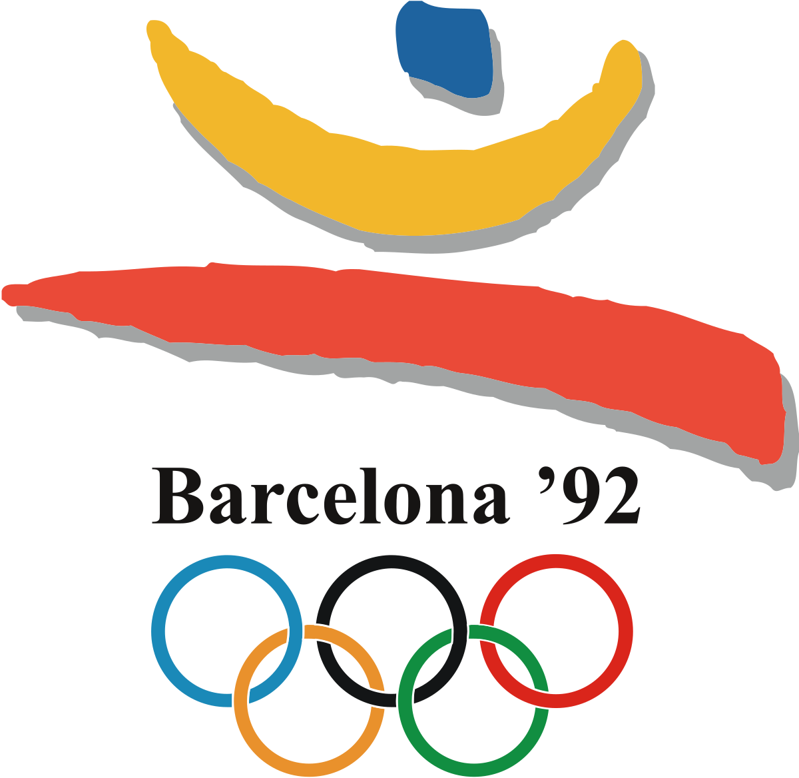
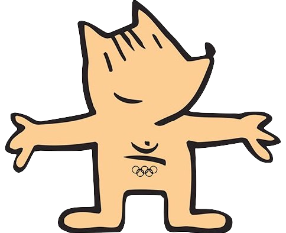

 
Date
25 July - 09 Aug
Country
Spain
Countdown
-9,697 Days
Website
Probably a better resource
Athletes Expected
9,356
Stadium
Estadi Olímpic Lluís Companys
Facts
First boycott-free Olympics since sometime
Soviet Union had dissolved, first time not represented
I'm sure there's more...